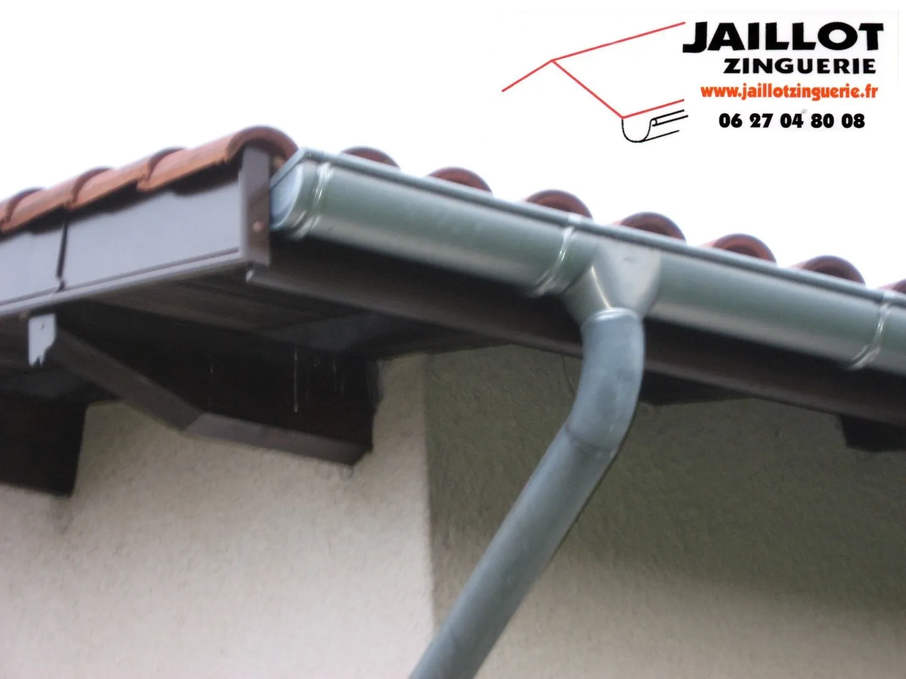
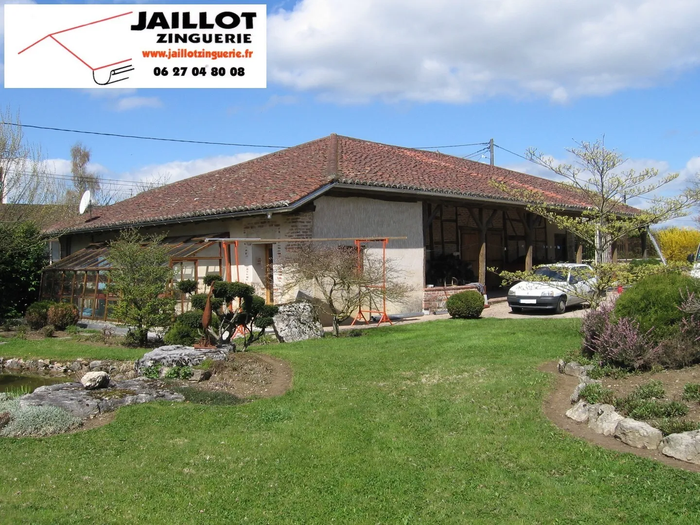
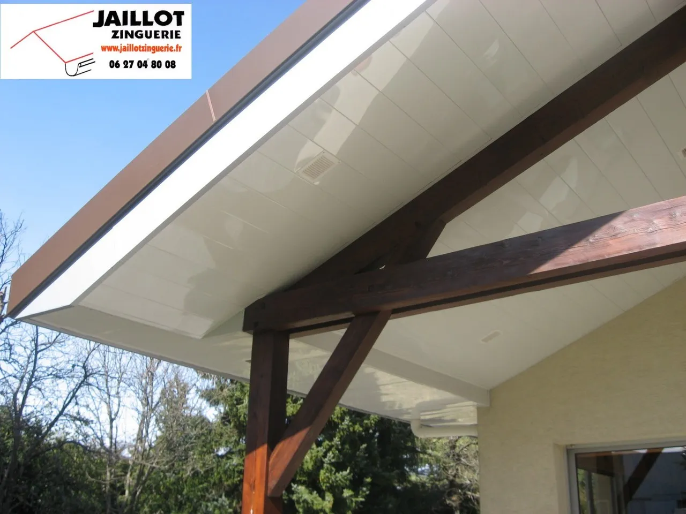

La zinguerie
Tous les ouvrages réalisés par soudures à l’étain et au plomb. Le zinc, le cuivre et la tôle, travaillés à la main.


Les raccords de toiture
Ce sont eux qui font l’étanchéité de votre toit. Ils se confient à un spécialiste qui respecte les règles de l’art propres à chaque matériau.
- Abergement de cheminée.
- Noue , couloir et solin contre mur.
- Sorties de ventilation (VMC).
- Lucarnes habillées et étanches.
Gouttières et descentes
Gouttières et chéneaux en zinc, en cuivre ou en tôle laquée, tuyaux de descente : l’eau du toit part là où il faut, sans abîmer vos murs.

Bandeaux et frisettes
Bandeaux en aluminium laqué, tôle laquée, zinc ou cuivre, frisettes en débord de toiture, habillage de cheminées et de façades.

On vous répond
Quels matériaux utilisez-vous ?
Zinc, cuivre, plomb, aluminium laqué et tôle laquée, selon votre toiture.
Neuf ou rénovation ?
Les deux : Laurent Jaillot est à votre disposition pour vos travaux de rénovation comme pour vos projets de construction.
Où intervenez-vous ?
Depuis Condeissiat, aux portes de la Dombes, à 15 km de Bourg-en-Bresse, dans l’Ain. Zone exacte à confirmer avec l’entreprise.
Comment vous présenter mon projet ?
Appelez le 06 27 04 80 08 ou le 04 74 24 34 93, ou décrivez votre projet et son lieu dans le formulaire de contact.